Part A: Exploring the Power of Flow Models (this page) | Part B: Flow Matching from Scratch →
Overview
This part explores a pretrained text-to-image flow model (PixNerd-XXL-P16-T2I),
no training involved. A flow model learns a velocity field that moves a sample along a
straight line from pure Gaussian noise (t=0) to a clean image (t=1):
x_t = (1-t)ε + t·x_1, with target velocity x_1 - ε.
Every exercise below boils down to evaluating this velocity field and integrating it with
the Euler method, just with different starting points, guidance, and tricks.
1.1 Constructing Noisy Training Inputs
Linear interpolation between a clean image and Gaussian noise. I reused the same noise
tensor at every t so the only thing changing across the row is the mixing
weight.
def interpolate(image, noise, t):
return (1 - t) * noise + t * image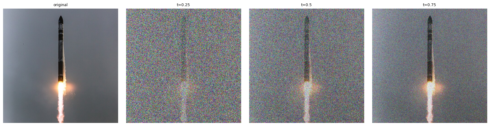
1.2 Classical Denoising (Gaussian Blur Baseline)
Since x_t = (1-t)ε + t·x_1, dividing by t restores
roughly the right amplitude before blurring the noise away:
x̂_1 = G_σ(x_t / t). I swept σ ∈ {1,2,4,8,16}
and kept whichever minimized MSE against the known clean image.
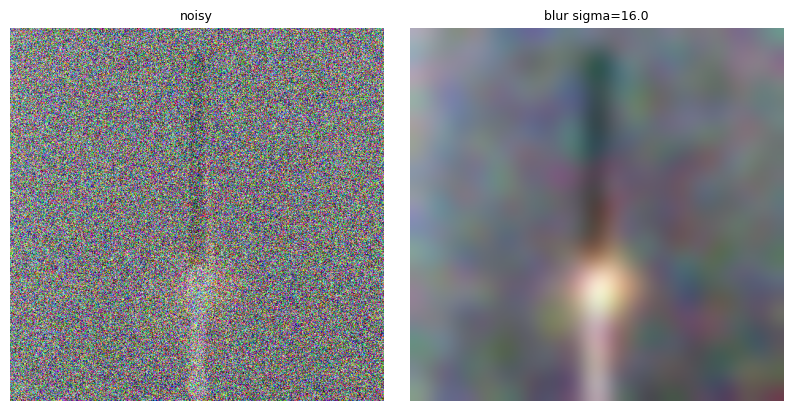
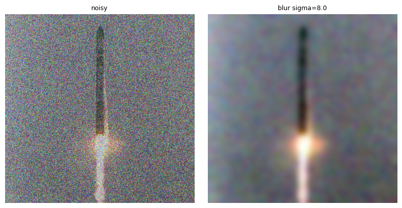
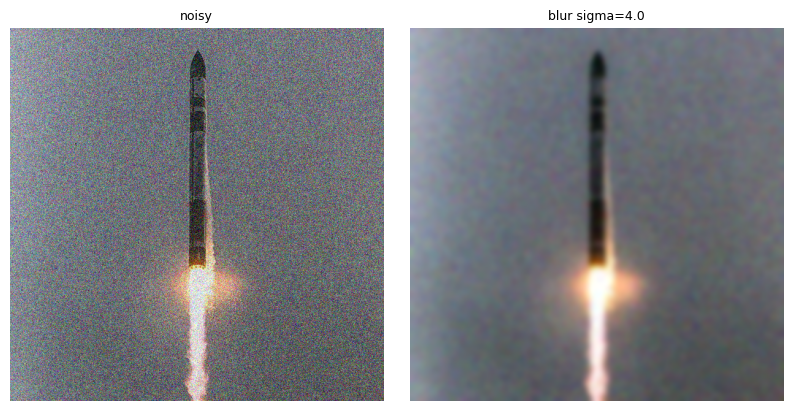
At t=0.25 the amplitude correction alone isn't enough to recover anything but a vague silhouette, Gaussian blur has no way to tell signal from noise, it just averages both away together, and the optimal sigma has to be huge to wash out that much noise. As t grows there's proportionally less noise to remove, so the optimal sigma shrinks and the blurred result starts looking like an actual (soft) photo rather than a colored smudge.
1.3 One-Step Denoising
The pretrained model predicts a velocity v_θ(x_t,t,c) that points
toward the clean image, so a single step from t gets a much better estimate
than blurring: x̂_1 = x_t + (1-t)v_θ(x_t,t,c).
def one_step_denoise(x, t, condition, predict_velocity):
return x + (1 - t) * predict_velocity(x, t, condition)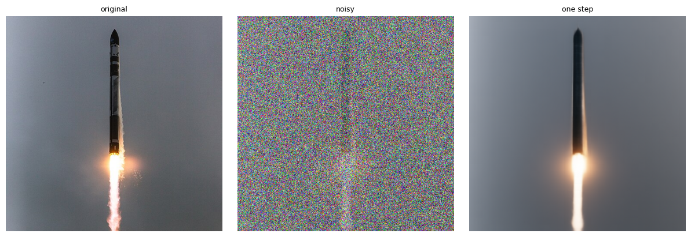
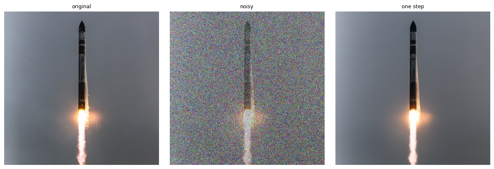
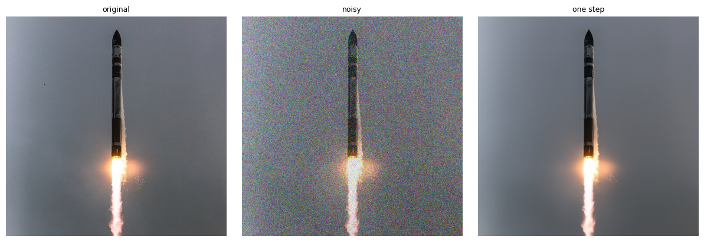
Prompt "a high quality photo". Even at t=0.25, nearly all noise, a single model evaluation recovers a sharp, plausible Electron, nothing like the corresponding blur result above at the same t. The one-step estimate barely changes across t at all, the model is confident about what it's looking at well before a human eye could tell.
1.4 Visualizing Velocity
What is the model actually predicting? I compared its update
(1-t)v̂_t against the true update needed to land exactly back on my
original image, (1-t)v_gt = x_1 - x_t, and visualized the per-pixel RGB RMS
error between them.
def velocity_diagnostics(x_t, t, clean_image, epsilon, condition, predict_velocity):
predicted_update = (1 - t) * predict_velocity(x_t, t, condition)
ground_truth_update = (1 - t) * (clean_image - epsilon)
error_map = (predicted_update - ground_truth_update).pow(2).mean(dim=1).sqrt()
return predicted_update, ground_truth_update, error_map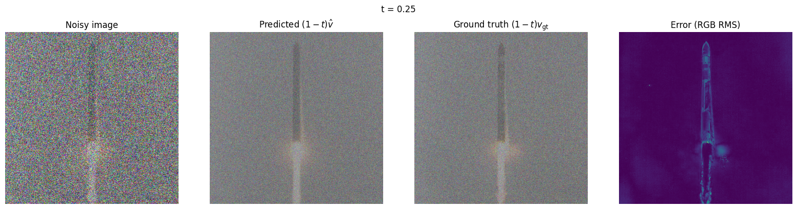
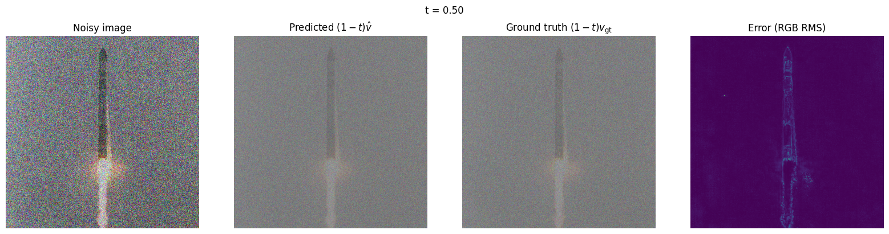
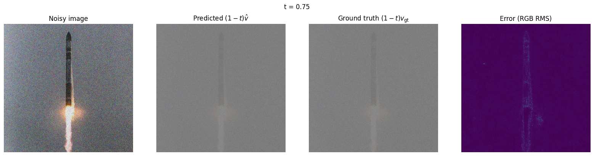
At every t, the predicted and ground-truth updates look almost identical as flat gray fields, since both are dominated by the same large injected noise term. The error map is where the real signal shows up: it lights up exactly along the Electron's silhouette and exhaust plume, the parts of the image the model can't recover exactly because it never saw my specific noise draw, only the text prompt. That error band gets visibly fainter as t increases, less noise was added in the first place, so there's less for the model to disagree with the ground truth about.
1.5 Iterative Denoising with Euler Sampling
One step is a coarse estimate; many small steps trace the flow properly. I recompute the velocity after every update and shorten the last step so the trajectory lands exactly on t=1.
def euler_sample(x_start, t_start, step_size, velocity):
x, t = x_start, float(t_start)
states = [(t, x.clone())]
n = 0
while t < 1 - 1e-9:
remaining = 1.0 - t
last = remaining <= step_size + 1e-9
h = remaining if last else step_size
x = x + h * velocity(x, t)
t = 1.0 if last else t + h
n += 1
if last or n % 5 == 0:
states.append((t, x.clone()))
return x, statesSanity-checked against a constant velocity field first: starting at t=0, 0.5, and 0.93 with h=0.02 produced exactly 50, 25, and 4 updates respectively, with the final state always landing at t=1, before trusting it on the real model.
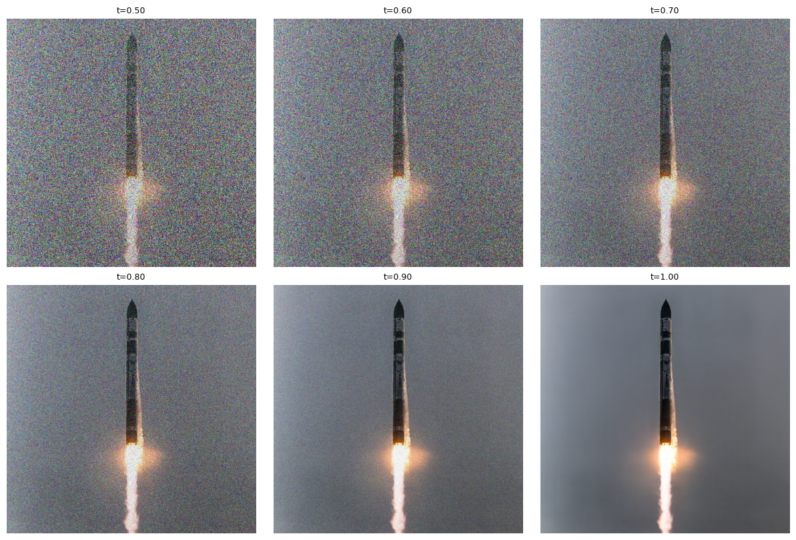
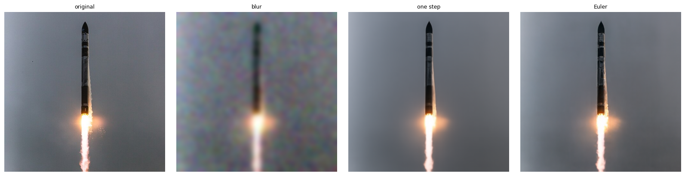
1.6 Generating Images from Noise
Starting Euler sampling from pure noise at t=0 instead of a real image turns the denoiser into a generator. Five independent seeds, prompt "a high quality photo", 50 steps.

A generic prompt like "a high quality photo" has an obvious subject bias: all five samples are close-up human portraits, not landscapes, objects, or anything else "high quality" could plausibly describe. The model's training data must associate that phrase overwhelmingly with professional portrait photography.
2.1 Classifier-Free Guidance
CFG pushes samples further in the direction the prompt already points, by extrapolating
away from the unconditional prediction: v_cfg = v_c + w(v_c - v_u).
def cfg_velocity(x, t, condition, w, predict_velocity, null_condition=''):
v_c = predict_velocity(x, t, condition)
v_u = predict_velocity(x, t, null_condition)
return v_c + w * (v_c - v_u)
I checked w=0 reduces exactly to the ordinary conditional prediction before
trusting it, then generated the same five seeds as 1.6 with w=7.

3.1 Image-to-Image Editing
Add noise up to a starting time t_start, then Euler-sample with CFG back to
t=1. Earlier starting times (more noise added) give the model more freedom to deviate from
the original; later starting times mostly just denoise it back to itself.
def edit(image, noise, t_start, condition, predict_velocity, w=7, step_size=0.02):
x = interpolate(image, noise, t_start)
velocity = lambda x, t: cfg_velocity(x, t, condition, w, predict_velocity, null_condition)
edited, _ = euler_sample(x, t_start, step_size, velocity)
return editedSeven starting times (0.02–0.50), prompt "a high quality photo", on the provided Campanile and two of my own photos.

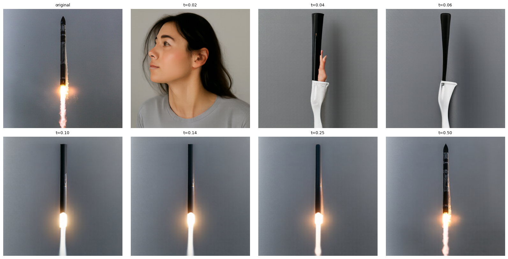
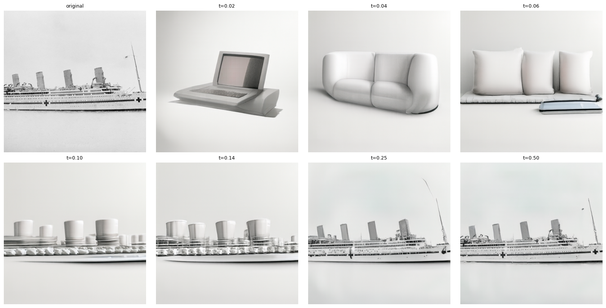
At t=0.02 the model barely sees the original at all, just enough noise is in there for it to improvise a laptop, a couch, and ship-shaped scenes that share the Campanile and ships' rough silhouettes. By t≥0.25 the geometry is fully locked back to the original.
Bonus: Hand-Drawn & Web Images
Same procedure on a non-photographic image downloaded from the web and two of my own drawings, to see the model project them onto the natural-image manifold. The two drawings are a nod to The Little Prince: an elephant, and the hat-shaped snake that's secretly a boa constrictor digesting one.
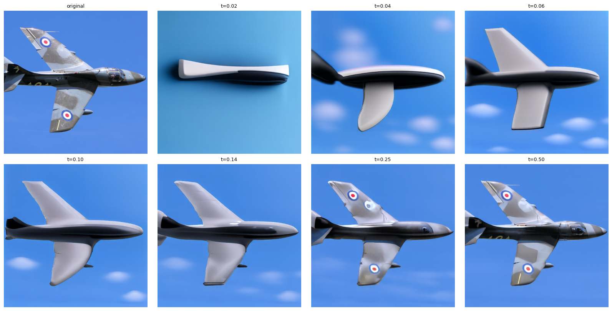
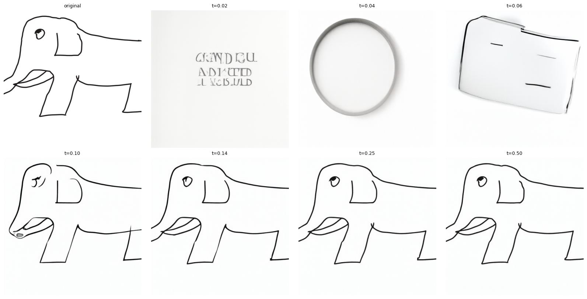
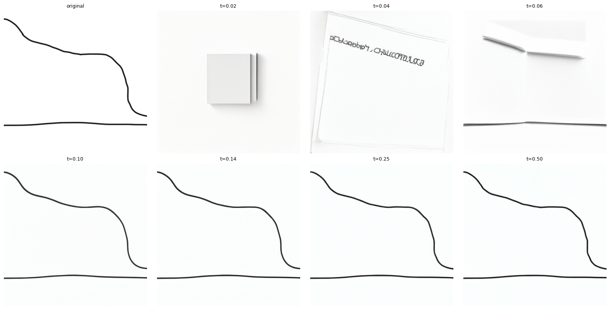
The line-drawn elephant is nearly unchanged at every starting time, since a clean black outline on white is already close to how the model "simplifies" photos toward, there just isn't much noise-only room to hallucinate into. The jet photo, by contrast, gets fully reinvented into unrelated objects (a laptop, a sofa, pillows) at the smallest starting times before converging back to a jet.
3.2 Text-Guided Image Editing
Same editing procedure as 3.1, but swap the generic prompt for a custom one per image. Same seven starting times.
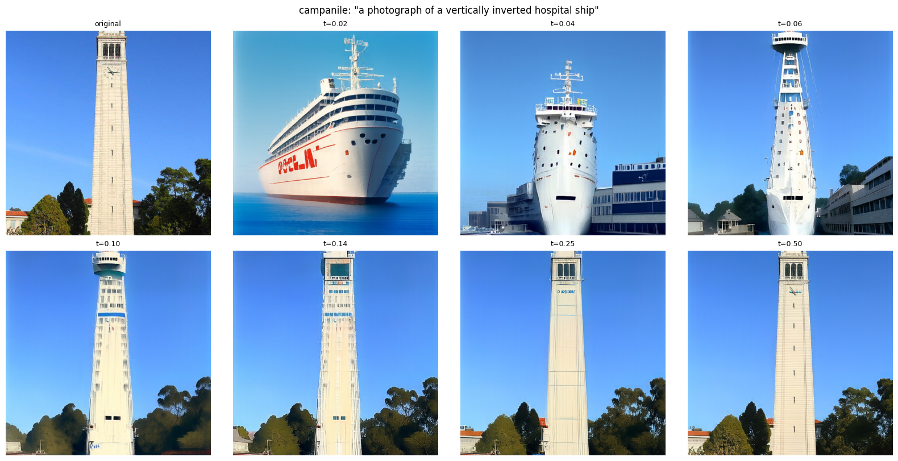
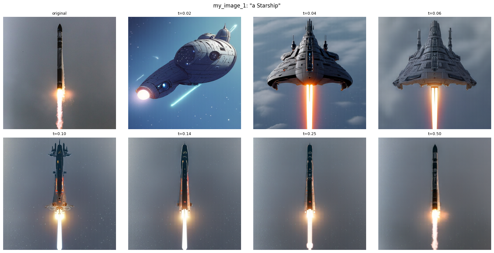
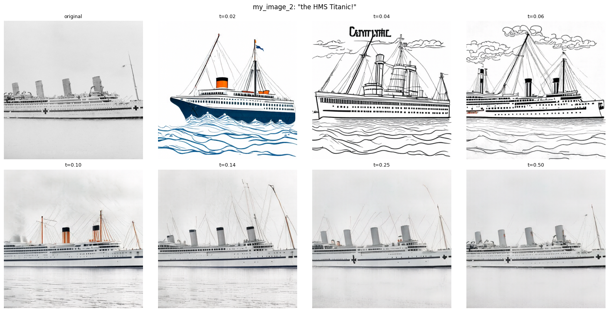
3.3 Visual Anagrams
Average the CFG velocity for prompt A with the 180°-rotated CFG velocity for prompt B (evaluated on the rotated image, then rotated back), and Euler-sample with that averaged field from pure noise. The result looks like subject A right-side up and subject B upside down.
def visual_anagrams(noise, condition_a, condition_b, predict_velocity, w=7, step_size=0.02):
def velocity(x, t):
v_a = cfg_velocity(x, t, condition_a, w, predict_velocity, null_condition)
v_b = rotate180(cfg_velocity(rotate180(x), t, condition_b, w, predict_velocity, null_condition))
return (v_a + v_b) / 2
x, _ = euler_sample(noise, 0, step_size, velocity)
return x
Checked rotate180(rotate180(x)) == x before relying on it as an involution.


3.4 Hybrid Images
Low-pass the CFG velocity for the "far away" prompt and high-pass the CFG velocity for the "close up" prompt, then sum them before each Euler update, so the sample is pulled toward prompt A's coarse structure and prompt B's fine detail at the same time.
def make_hybrids(noise, condition_a, condition_b, predict_velocity, w=7, step_size=0.02):
def velocity(x, t):
v_a = cfg_velocity(x, t, condition_a, w, predict_velocity, null_condition)
v_b = cfg_velocity(x, t, condition_b, w, predict_velocity, null_condition)
return lowpass(v_a) + v_b - lowpass(v_b)
x, _ = euler_sample(noise, 0, step_size, velocity)
return xTwo prompt pairs, distant (low-pass) prompt listed first:


Up close both read entirely as the high-frequency prompt, a waterfall scene and a stand of trees respectively, with no obvious skull or cat hiding in them. Shrunk down to thumbnail size, the low-frequency prompt takes over: the waterfall's dark cliff face and pale falling water resolve into a skull's eye sockets and jaw, and the three tree trunks collapse into a cat's face, two "ears" from the outer trees and a muzzle from the gap between them.